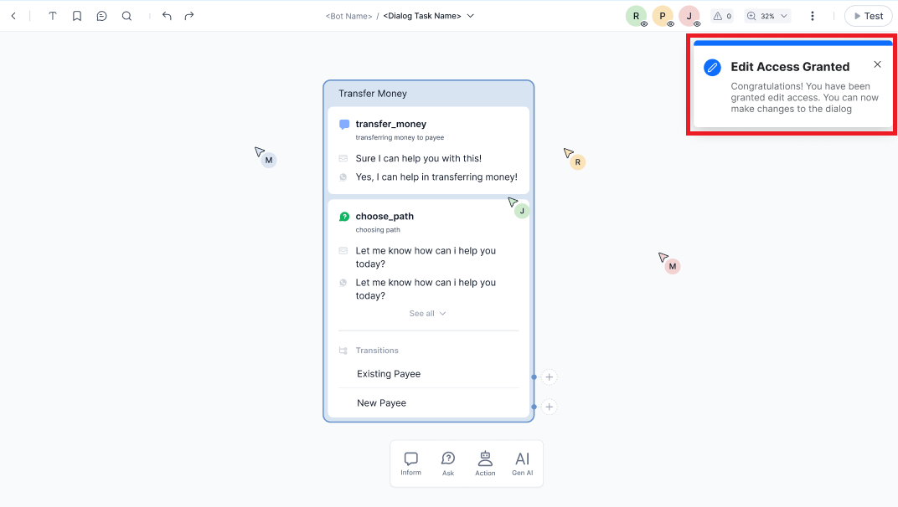
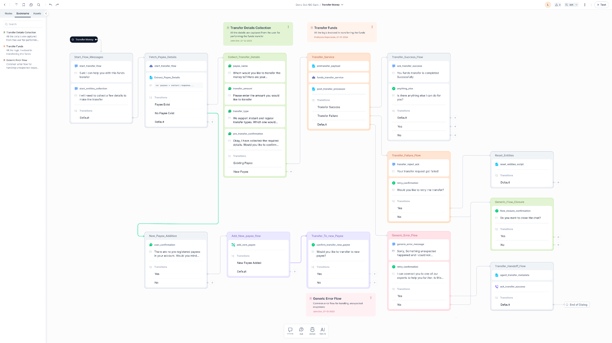
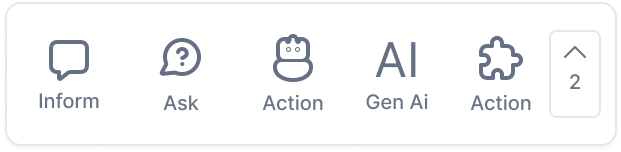
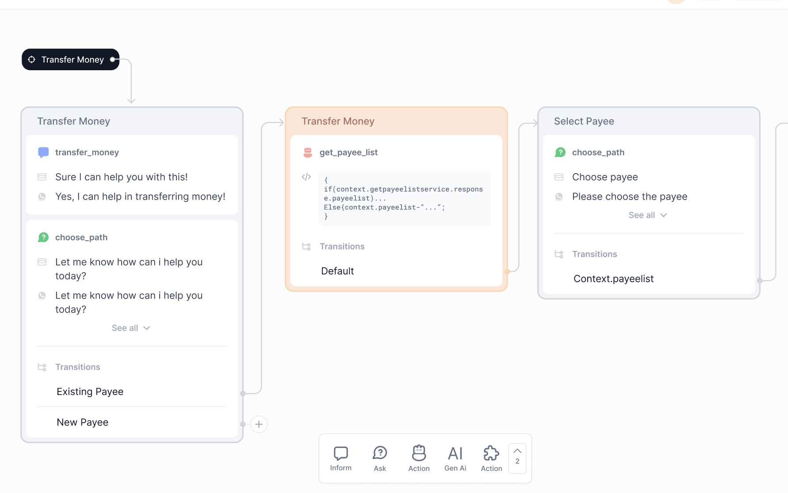
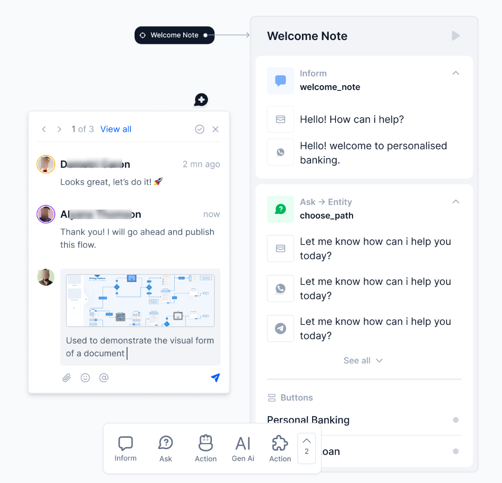
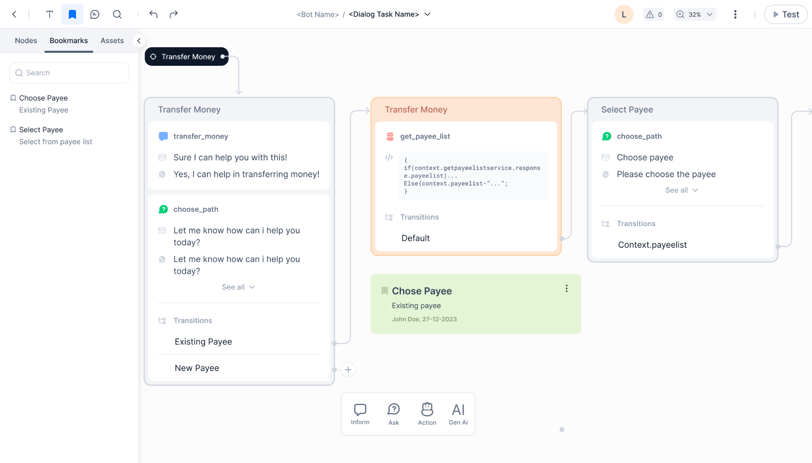
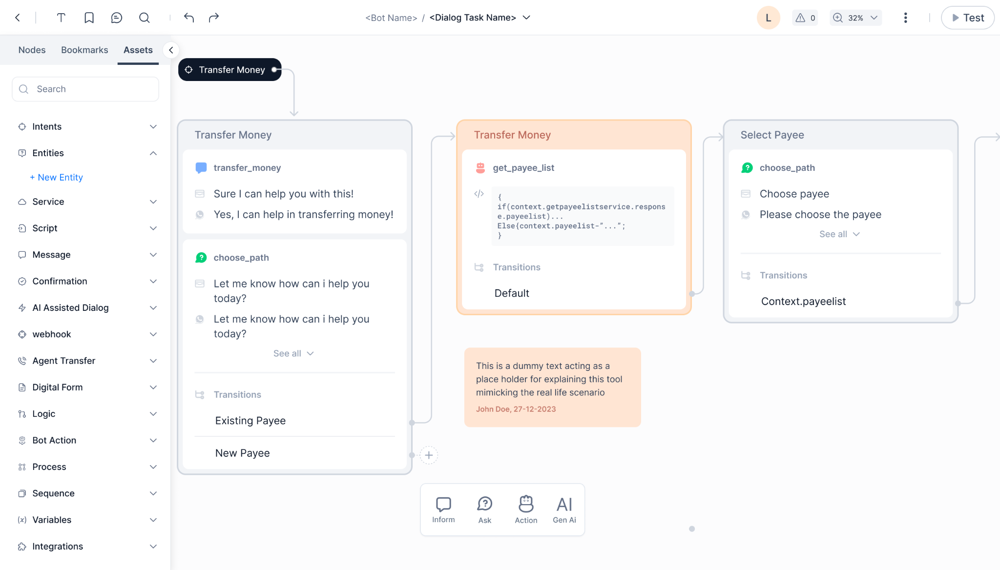

Automation AI Release Notes¶
This document provides information on the feature updates and enhancements introduced in Automation AI of AI for Service (XO) v11.x releases.
v11.23.0 March 28, 2026¶
Minor Release
This update includes enhancements and bug fixes. The key enhancements included in this release are summarized below.
Agent Flow
Conversation History Length Doubled in the Agent Node and DialogGPT
The conversation history now supports up to 50 messages. It improves retention for custom prompts and prevents mid-conversation restarts, context loss, and repeated questions. You can configure the limit independently of the DialogGPT and Agent Node features. Learn more
Agent Transfer
Control Session Closure Message for Genesys
A new Disable End Conversation Message setting in Genesys configurations allows administrators to control whether users see a session closure message after an agent conversation ends. Its default state in the Platform is disabled. Learn more
Genesys Agent Message ID Available via Context Variable
When an agent responds in Genesys, after an agent handoff, a message ID is now exposed via a context variable and recorded in debug logs for traceability. This message ID helps trace the agent who handled the conversation. Learn more
v11.22.1 March 14, 2026¶
Patch Release
This update includes bug fixes.
v11.22.0 February 28, 2026¶
Minor Release
This update includes enhancements and bug fixes. The key enhancements included in this release are summarized below.
DialogGPT
DialogGPT-Based Apps now support nlMeta
DialogGPT-based apps now support handling interruptions across linked apps using the nlMeta object. It allows you to pass information directly to the AI Agent, which prioritizes and executes the specified intent before processing any other input. Learn more
Agent Flow
Context-Aware Custom Prompts in Agent Node
The context object is now supported in pre-processor and post-processor scripts within Agent Node custom prompts. Previously, these scripts only supported static content. With this update, developers can render templates dynamically using real-time context data, enabling greater flexibility across pre- and post-processor features.
v11.21.1 January 31, 2026¶
Patch Release
This update includes bug fixes.
v11.21.0 January 17, 2026¶
Minor Release
This update includes enhancements and bug fixes. The key enhancements included in this release are summarized below.
DialogGPT
Multiple Intent Descriptions
DialogGPT now allows users to add multiple descriptions for each intent, giving the flexibility to define various phrasings, perspectives, and explanations. This enhancement helps users achieve broader semantic coverage and significantly improves the accuracy of intent shortlisting and detection—especially valuable when working with broad, overlapping, or domain-specific intents. Learn more
Agent Node
Ability to Render Rich UI Components from LLM Responses
The Agent Node can now pass structured JSON responses from the LLM to client channels for rich UI presentation. When users enable the "Parse Rich Templates" option in custom prompt settings (available for V1 and V2 prompts), the node passes the JSON payloads as structured responses to the platform, which then sends them as templates to client channels. This can be achieved by either prompting the model to generate responses in structured JSON format or by generating the templates in the prompt post-processor. The Node passes these JSON payloads as structured responses to the platform, which then sends them as templates to client channels. The client channels render these templates as supported UI components such as cards, lists, tables, and suggestion chips, enabling visually engaging information display beyond plain text. Learn more
Security (API Scopes)
End-to-End Request and Response Payload Encryption for APIs
Payload encryption support has been extended to request payloads for selected APIs, in addition to the existing response payload encryption. The "Enforce Request and Response Payload Encryption" option (renamed from "Enforce Response Payload Encryption") now encrypts both request and response payloads. When enabled, the system generates a key to encrypt payloads in both directions, ensuring full end-to-end data protection for APIs within the JWT application's assigned scope. Learn more
Flows & Channels
Enhanced Response Structure for the Get Linked Apps API
The Get Linked Apps API has been enhanced with a revised response structure to retrieve all linked applications associated with a universal or parent app. Learn more
Agent Transfer
Read Receipts for WhatsApp Cloud API Integration
The Platform now supports WhatsApp Cloud API read receipts, allowing end users to see message status indicators (delivered and read) across both bot and agent conversations. This feature is automatically available for all existing and new WhatsApp Cloud API integrations. Learn more
Availability of Salesforce MIAW Conversation ID
The Platform now exposes the Salesforce MIAW Conversation ID in the bot user context during agent transfer. This enables Message, Script, and Call Flow nodes, as well as external integrations, to access the active MIAW conversation identifier at runtime for tracking, correlation, and conditional logic. Learn more
NLU Config
BGE M3 Embeddings Support
The Platform now supports BGE M3 Embeddings as an additional option for Knowledge Graph, Machine Learning, and Few-Shot NLP use cases across all languages.
Users can select BGE M3 alongside existing options (MPNet and LaBSE) to enhance multilingual performance and improve retrieval accuracy. Learn more
v11.20.0 December 07, 2025¶
Minor Release
This update includes enhancements and bug fixes. The key enhancements included in this release are summarized below.
DialogGPT
DialogGPT Now Default Orchestration
DialogGPT is now the default orchestration mode for AI for Service app creation, replacing traditional NLP. This reduces configuration effort and improves conversational accuracy for new AI Agents. Learn more
Redesigned Navigation for DialogGPT and NLP-based App
The platform now provides tailored navigation experiences for DialogGPT and NLP-based apps. By aligning navigation with the app type, the update improves discoverability and helps users navigate the AI Agent creation process with greater clarity and efficiency. Learn more
New Playground Option in Evaluation
A new Playground section in the Evaluation menu, purpose-built for developers, combines Debug Logs and Talk to Bot in a side-by-side view, providing an integrated testing and debugging experience with synchronized session control and status management. Learn more
Embedding Model Deprecation and Automatic Upgrade
The legacy embedding models (MPNet, LaBSE, E5, and BGE-M3 V1) are deprecated to improve system performance. Any application that uses one of these models will be automatically upgraded to use BGE-M3 V2. Learn more
v11.19.1 November 19, 2025¶
Patch Release
This update includes enhancements and bug fixes. The key enhancements included in this release are summarized below.
Agent Node
Tool Calling with Streaming Responses
The Agent Node now supports tool calling with streaming, enabling models to deliver responses in real time as they're generated, resulting in faster, more fluid user interactions.
Key features:
- Simplified V2 Prompt Setup: The Custom Prompt page now features a Response Payload Format control (OpenAI, Azure OpenAI, or Custom) for automatic parsing, eliminating the need for manual Post-Processor setup in streaming configurations.
- Prompt-Level Control: Use the new Streaming Toggle on the V2 prompt page to enable/disable incremental responses.
Backward Compatibility
All existing V1 and V2 prompts remain unchanged; streaming is disabled by default, preserving existing configurations.
API
New Lightweight Conversation History API
The new lightweight Conversation History (getMessages) API is optimized for high-volume conversation summarization, delivering improved performance, reliability, and scalability. Learn more
Mandatory API Response Encryption Based on App Settings
The Public API endpoints no longer support the encrypt=true query parameter. Response payload encryption is now enforced only through app-level settings, ensuring consistent encryption behavior without parameter-based overrides.
v11.19.0 October 25, 2025¶
Minor Release
This update includes enhancements and bug fixes. The key enhancements included in this release are summarized below.
Agent Node
LLM Text Response Streaming Over Web/Mobile SDK
AI for Service now offers real-time LLM response streaming for Web/Mobile SDK chat conversations. This feature reduces latency and improves user engagement through incremental message delivery via Agent and Prompt Nodes. The streaming capability is available only for V1 prompts in Agent Nodes and does not support tool calling. Users can select from existing streaming prompt templates or create custom ones. Existing voice streaming prompts remain fully compatible. Learn more
Agent Node - Default Intent Detection Settings
The Agent node's Intent Detection now defaults to "Prefer user input as intent and proceed with Hold & Resume settings”. The "Ask the user how to proceed" option is removed to streamline configuration, standardize user input handling, and improve the overall end-user experience. This change applies to both new and existing Agent nodes, with current nodes automatically updated for backward compatibility. Learn more
DialogGPT
Multi-language Support
DialogGPT has expanded its intent identification and orchestration capabilities to include non-English languages, allowing users to fully leverage its power in multilingual applications. The process for adding new languages is streamlined, allowing users to easily configure LLM-based or traditional translation engines to translate the user input and AI Agent responses. Learn more
Pre-intent Input Guardrails Support
DialogGPT now supports pre-intent input guardrails to scan and block harmful content before it reaches language models during intent identification. This enhancement addresses security vulnerabilities and compliance risks, complementing the platform's existing PII protection and standard guardrails. Learn more
v11.18.0 September 27, 2025¶
Minor Release
This update includes bug fixes.
v11.17.1 September 15, 2025¶
Patch Release
This update includes enhancements and bug fixes. The key enhancement included in this release is summarized below.
Agent Transfer
Salesforce MIAW Agent Integration Enhancements
AI for Service now offers enhanced Salesforce MIAW integration, providing uninterrupted customer chat sessions even during agent transfers and conferences. Sessions remain active as long as either an agent or the customer is engaged, with the platform respecting Salesforce SSE events for transfers and conferencing. This improvement includes real-time system messages for end-users, clearly indicating when a transfer starts, a new agent joins, or an agent leaves a conference, thereby increasing transparency and ensuring a consistent, seamless support experience. Learn more
Service Node
New Option to Disable SSL Certificate Validation for API Calls
The new Client Certificate Authentication option in the AI Agent allows platform users to define whether client certificate validation is required for individual Service Nodes. This option is enabled by default to ensure enhanced security against unauthorized access while maintaining compatibility with existing configurations. For users using custom API calls that require authentication methods beyond the platform's standard SSL client-certificate validation (such as OAuth-type authorization profiles), this feature allows them to disable certificate validation and implement their own custom authentication mechanisms. Learn more
NLP
Detailed Insights into Batch Testing Failure Reasons
Batch testing results now offer improved clarity regarding why an expected intent failed to qualify as the matched intent by showing the Elimination Reason for the failed intent. Results clearly indicate whether the failure was due to the model or eliminated by the Ranking & Resolver (R&R) engine, enabling users to troubleshoot more efficiently and improve model training and policy tuning. Learn more
v11.17.0 August 23, 2025¶
Minor Release
This update includes enhancements and bug fixes. The key enhancements included in this release are summarized below.
API
Call ID Support in the getMessage API for AudioCodes and SAVG
To improve access to app-user conversation history for voice interactions, the getMessage API now accepts callId as an optional query parameter for AudioCodes and SAVG. It aims to reduce latency and infrastructure load for high-volume customers who retrieve conversational data for analysis and auditing. Learn more
v11.16.1 August 11, 2025¶
Patch Release
This update includes enhancements and bug fixes. The key enhancement included in this release is summarized below.
Agent Node
Enhanced Agent Node Configuration for Streamlined Input Handling
Agent Node configuration is streamlined by replacing ‘retries’ with ‘number of iterations’ in Instance Properties and removing the Initial and Error Prompts sections from the IVR Properties, as the models will dynamically manage prompting across voice channels. Learn more
IVR Property Support for LLM Streaming in Agent Node
Agent nodes with LLM streaming now honor configured IVR properties (timeout, prompts, barge-in, grammar, retries, call control, and recording) instead of using a hardcoded 60-second timeout. Node-level settings take precedence over global configurations, providing precise control of voice interactions without affecting non-LLM nodes. Learn more
NLP
Batch Testing now supports Zero-Shot Model Feature
The Platform now supports the Zero-Shot Model feature with the existing NLP-based Batch Testing. This enhancement allows you to validate utterance predictions even when the bot is not explicitly trained on those utterances, enabling more flexible evaluation of LLM-based bots. Learn more
v11.16.0 July 26, 2025¶
Minor Release
This update includes enhancements and bug fixes. The key enhancements included in this release are summarized below.
DialogGPT
Enhanced DialogGPT Batch Testing Framework
The DialogGPT batch testing framework now supports the validation of specific Conversational Intent Types (e.g., Hold, Restart, Refuse, End, Agent Transfer, Repeat) within test cases, enabling direct testing of how AI Agents handle key conversational events. This enhancement enhances the test coverage, accuracy, and reliability of AI Agent performance across various conversation types. Learn more
Agent Transfer
User Experience Enhancements in Salesforce MIAW Agent Integration
Salesforce MIAW Agent Integration now includes human agent name display, real-time read receipts for both parties, automatic inactivity timeouts, and UI-based management of standard responses and stop words. These enhancements improve the agent experience, streamline session handling, and simplify configuration directly through the interface. Learn more
Dialog Builder
Entity Reuse Across Dialog Flows
A new configurable flag, ‘reuseEntityWords: true’, at the Dynamic Intent Node and Dialog Node levels allows entity values extracted in a parent dialog to be automatically available and reusable in downstream dialogs without re-prompting, improving end-user experience. Learn more
NLP
Removal of Precondition for Confusion Matrix Generation
The Confusion Matrix can now be generated without requiring every configured intent to have at least one utterance, removing previous restrictions. This enables more flexible and iterative model evaluation, especially when working with incomplete datasets during early-stage development. Learn more
v11.15.1 July 12, 2025¶
Patch Release
This update includes enhancement and bug fixes. The key enhancement included in this release is summarized below.
DialogGPT
Sub-Intent Scoping Enhancement
DialogGPT has been optimized to manage sub-intents using dialog context, moving away from indexing. This change provides a clear separation between top-level intents and sub-intents, thereby improving the accuracy of the intent qualification and also providing developers with greater control. Learn more
v11.15.0 June 30, 2025¶
Minor Release
This update includes enhancements and bug fixes. The key enhancements included in this release are summarized below.
DialogGPT
Configurable Search AI Retrieval Settings
DialogGPT now allows users to configure chunk limits for Search AI retrieval, enabling them to control the number of chunks retrieved from knowledge sources. This feature improves the response times, contributes to improved intent identification, and optimizes token consumption, while providing precise control over the balance between context depth and performance. Learn more
Enhanced Discoverability for Automation Node Settings
The Automation Node’s routing settings are now also available at Flow & Channels > Automation Routing > Routing Modes for better accessibility and visibility. This streamlined navigation not only enables users to view and configure settings at an Automation Node but also provides a complete view of the different routing modes - Default, DialogGPT, and Agentic App, used across the app. Learn more
Batch Testing Now Supports Multi-app Routing
The Batch Testing feature now supports multi-app routing, enabling users to evaluate conversational flows that span across multiple linked Assistants (apps). This enhancement aligns batch testing with real-world scenarios where conversations are dynamically routed to multiple linked apps. Learn more
Enhancement of Batch Testing Public APIs to support creation and management of test suites
As part of the ongoing Batch Testing support for DialogGPT, several enhancements are being introduced to the public APIs. These changes ensure compatibility with new test formats, support for Multi-App Routing, and maintain flexibility to handle both NLP-based and DialogGPT-based applications. Learn more
Agent Transfer
Salesforce MIAW Agent Integration Enhancements
The Salesforce MIAW Agent Integration now includes features that enhance live support experiences. These enhancements help prepare agents, empower end-users, and maintain consistent brand communication.
Key enhancements:
-
Metadata Transfer: Essential context, including usernames, conversation summaries, case IDs, and session details, are now automatically transferred from the Platform to the Salesforce Agent Console during agent handoffs. This provides agents with immediate access to relevant information, reducing the need for users to repeat details and thereby accelerating issue resolution.
-
User-controlled Session End: End-users can now conclude live agent sessions using a configurable command. This provides users with more control over their experience and helps reduce unnecessary agent occupancy.
-
Customizable Standard Responses: Default system messages displayed during handoffs and live chats, including wait times, agent join alerts, and session closure prompts, can now be customized. This ensures a consistent, branded experience aligned with user expectations.
User-Bot Conversation Summary for Live Agent Transfers
The Platform now enhances agent transfers by sending a conversation summary of the end-user and bot chat to the live agent during the transfer. This enhancement streamlines agent handoff by presenting a concise, GenAI-generated summary alongside the existing chat history link, eliminating the need for agents to navigate away from the chat window or open new pages to understand the conversation context. Learn more
API
Call ID Support in the getMessage API
To improve access to bot-user conversation history for voice interactions, the getMessage API now accepts callId as an optional query parameter, in addition to the existing sessionId. It aims to reduce latency and infrastructure load for high-volume customers who retrieve conversational data for analysis and auditing. Learn more
v11.14.1 June 14, 2025¶
Patch Release
This update includes enhancements and bug fixes. The key enhancement included in this release is summarized below.
Agent Transfer
Genesys Agent Integration Supports Attachment Sharing
Users can now share files with live agents to provide additional context and facilitate more efficient issue resolution. Previously supported only in the ServiceNow integration, this feature is now available in Genesys. Currently, Genesys supports attachment sharing only through the WebSDK channel.
v11.14.0 May 31, 2025¶
Minor Release
This update includes enhancements and bug fixes. The key enhancements included in this release are summarized below.
DialogGPT
Evaluation of DialogGPT
The Batch Testing feature now provides a comprehensive evaluation framework to validate and enhance orchestration accuracy across all conversation types. It offers flexible test creation methods (manual and bulk upload) and assesses utterances across the retrieval and intent detection pipeline. It also supports different model configurations and provides comprehensive performance metrics for both development and production environments.
Key features
- End-to-End Orchestration Testing: Processes each utterance through the full retrieval and LLM workflow, mirroring real-world behavior to uncover issues static testing might miss.
- Model Configuration Flexibility: Supports testing across different combinations of LLMs and model configurations to identify the most effective configuration for your app.
- Granular Performance Insights: Measure accuracy, precision, recall, and F1 score across all conversation types, including Dialogs, FAQs, Knowledge, and Conversation Intents.
- Lifecycle Support: Enables batch testing for both in-development and published apps, supporting validation at any stage of the deployment lifecycle.
Improved App Routing Discoverability
Automation app linking is now centralized for easier access under Flow & Channels > Manage Automation. This unified interface provides a quick view of Chat and Voice flows, displaying key routing details, including Flow Name, Automation Node, Routing Mode, and Channel. The integrated search bar enables easy filtering of results and efficient management of routing configurations.
LLM & Generative AI
Enhanced Response Rephrasing for All Message Types
The Response Rephrasing feature has been significantly expanded and enhanced to deliver more natural, consistent assistant interactions across all response formats. This expansion now supports both structured content and traditional message types, while introducing new configuration options for granular tone control.
Key improvements
- Enhanced Content Support: Processes Standard Responses, Events, FAQs, and JSON/JavaScript templates. It retains the core rephrasing capability with the new Default-V2 prompt framework.
- Granular Control: Configure globally or at the component level (User, Error, Bot Prompts). Select specific response elements (messages, confirmations, entity values) for rephrasing with emotionally intelligent language.
Agent Transfer
Genesys WebMessaging Integration for Agent Transfer
The platform now supports Genesys WebMessaging integration for agent transfer, in addition to the existing WebChat option. While existing users can still use WebChat with their current settings, WebMessaging will be the default for new integrations. As Genesys is retiring WebChat on June 10, 2025, transitioning to WebMessaging is highly recommended for ongoing support and access to the latest features. Learn more
Analytics
Node-level Control to Classify Conversations as Self-serve / Drop-off
To improve the accuracy of containment metrics in Analytics, users can now manage how conversations are categorized at the node level. A "Containment Type" option has been introduced within the Instance Properties of Entity, Confirmation, Message, and Agent Nodes. This new setting allows direct classification of conversations as ‘Self-Serve’ or ‘Drop-Off’ in Instance Properties, ensuring accurate exit tracking at optional stages and more reliable Analytics metrics.
This Setting overrides the dialog-level settings for containment type. The default option would be the dialog-level settings. Learn more
v11.13.1 May 17, 2025¶
Patch Release
This update includes enhancements and bug fixes. The key enhancement included in this release is summarized below.
Agent Transfer
Salesforce MIAW Integration for Agent Transfer
AI for Service now includes a new Salesforce agent transfer integration: Messaging for In-App and Web (MIAW). This is in addition to the current Salesforce Live Chat. While existing users can still use Live Chat with their current settings, MIAW will be the default for new integrations. MIAW offers a personalized, asynchronous, and persistent messaging experience. As Salesforce is retiring Live Chat on February 14, 2026, transitioning to MIAW is highly recommended for ongoing support and access to the newest features. Learn more
Security Vulnerability Fixes
As part of the recent upgrade, the XO Platform addresses potential security vulnerabilities that may affect Natural Language Processing (NLP) in apps you configure for the Dutch language.
In rare cases, the app may not correctly recognize certain user utterances, which can reduce response accuracy.
Recommended Action:
To maintain optimal performance and ensure the security integrity of your Dutch language apps, follow these steps:
- Update training data: Expand training phrases to cover a wider range of user inputs.
- Retrain the app: Use the updated data to retrain the app’s NLP models for improved intent recognition.
- Republish the app: Republish the app to deploy the updated models to your production environment.
These steps help restore and maintain high recognition accuracy and consistent responsiveness in your Dutch language apps.
v11.13.0 May 03, 2025¶
Minor Release
This update includes enhancements and bug fixes. The key enhancements included in this release are summarized below.
LLM & Generative AI
Zero-Shot Intent Detection with LLM-Generated Confidence Scores
The enhanced Zero-shot intent detection feature uses the confidence scores provided by the AI models to identify the definitive and probable intents, making it easy to compare them with the intents identified by the other NLU engines.
Key enhancements
- The system now utilizes confidence metrics from the language model for each identified intent, replacing previously hardcoded scores.
- A configurable "Zero-shot Threshold" setting (default 0.7, range 0-1) has been introduced. Zero-shot intents must exceed this threshold to be considered valid.
- Threshold-based filtering ensures that only high-confidence intents are sent to the Ranking & Resolver.
- The default V2 prompt is enhanced with a Conversation History slider parameter.
- LLM now receives intents, descriptions, conversation history, and the threshold score for processing.
Key benefits
- Leverages the full potential of the platform's diverse intent recognition capabilities.
- Deliver more relevant and contextually appropriate responses to end users.
- Configurable confidence thresholds aligned with their specific use case needs.
Pre-built and Custom Models Support for Rephrase User Query
The Rephrase User Query feature now supports both Pre-built and Custom Models, in addition to Kore.ai XO GPT. To use these models, users must create a custom prompt.
Users can optionally provide the Conversation_history key to specify the number of previous conversation messages to send to the LLM for improved contextual understanding.
Learn more
Expanded PII Settings at the Agent Node Level
PII detection and protection are now available at the Agent Node level. Users can select whether to send redacted values to the language model for enhanced privacy control. The data is redacted based on the patterns defined in the global PII settings. Learn more
Conversation Testing
Support for Tags and Descriptions of Test Suite
Conversation Testing now supports including tags and descriptions in the JSON file for test cases, enabling faster creation and easier reuse of test cases to improve usability and accelerate test case management. Learn more
Agent Transfer
Failed ServiceNow Agent Transfer Notification
The platform now displays a default, non-editable message to users when a ServiceNow agent transfer fails due to agent unavailability, improving user clarity and reducing the need for repeated transfer attempts. Learn more
v11.12.1 April 19, 2025¶
Patch Release
This update includes enhancements and bug fixes. The key enhancement included in this release is summarized below.
DialogGPT
Amazon Bedrock Support for DialogGPT
DialogGPT now supports Amazon Bedrock models, providing large enterprises with a flexible and versatile solution for efficient conversation management. This enhancement allows users to experiment with and utilize various models through a single integration, using custom prompts to optimize their experience.
v11.12.0 April 05, 2025¶
Minor Release
This update includes enhancements and bug fixes. The key enhancements included in this release are summarized below.
Agentic Experience
Seamless Integration with Agentic Apps for Multi-agent Orchestration
The fully autonomous Agentic Apps can now be easily integrated with the XO Platform. The integration simplifies the creation of highly contextual, self-service automation experiences using multi-agent orchestration powered by Agentic Apps.
Key features
- Choice between "Orchestrated Autonomy" or "Full Autonomy" based automation capabilities.
- Agentic Apps provide full support for any of the digital and voice channels enabled via the XO Platform.
Simplified Integration to Support for Real-time Voice Interactions
The platform's new integration framework simplifies the enablement of real-time voice interactions using multi-modal language models, enabling low-latency, contextual, and real-time voice interaction experiences for your customers.
Key features
-
Two-way real-time voice streaming through Kore Voice Gateway to power the conversation automation using state-of-the-art AI models.
-
Dedicated orchestrator to define the voice experiences and controls.
DialogGPT
Support for Dynamic Routing Capability Powered by DialogGPT
The Platform now supports Dynamic Routing capability powered by DialogGPT. This capability allows teams to independently develop and manage automation apps for their various functions and then link them to a common app. More importantly, it enables businesses to provide a single, unified interface to the end users instead of a separate interface for each function.
The orchestration is powered by DialogGPT, which provides context-aware, intelligent, and dynamic routing.
Key features
- Link Multiple Apps via Automation Node: The Automation Node in Experience Flows has been enhanced to support linking multiple apps and using DialogGPT for intent identification.
- Indexing Linked App Content: Dialog and FAQ chunks from linked apps are indexed in the parent app after linking. Search AI knowledge is supported only in the parent app by default.
- Embedding-Based Matching: User input and content from linked apps (dialogs, FAQs, search documents) are converted into embeddings with metadata. The platform then retrieves the top-matching chunks based on semantic similarity.
- LLM-Powered Intent Resolution: An LLM resolves the shortlisted chunks and determines the winning intent. It could be an Intent, Multiple Intents, Answers, FAQs, Conversation Intents, Ambiguous Intents, or Small Talk.
- Automated Event Handling: Default platform-provided event handlers are triggered based on the fulfillment type, ensuring smooth user interactions and dialog execution.
- Clarifying Questions for Ambiguous Intents: When ambiguous intents are detected, clarifying questions are triggered for disambiguation
- Simplified Training: There is no need for training utterances or invocation phrases for bot qualification. However, providing complete dialog descriptions is required for more accurate intent identification.
Learn more
Introducing XO GPT - DialogGPT Model
XO GPT is a powerful DialogGPT model hosted by Kore.ai, exclusively fine-tuned for handling complex conversations. It enhances contextual understanding and response coherence, generating fluent and contextually relevant answers. This results in smoother conversational flow, increased user engagement, greater control over data, and faster response times. Learn more
Updates to Multi-Intent Orchestration
Users can now customize the predefined Multi-Intent fulfillment dialog for greater control and flexibility when the Conversation Orchestrator detects multiple intents in a user’s utterance. Learn more
Agent Node Enhancement
Enhanced Agent Node with V2 Prompt and Tool Calling
In this update, Agent Node introduces a new version to fully take advantage of the Tool Calling capability of advanced AI Models. The new version (v2) orchestrates the Agent Node using the Tool Calling construct to collect entities, instruct business rules, and perform user-defined custom actions.
Key enhancements
- Tool-Based Orchestration:
- Exit Scenarios as Default Tools: Automate exit scenarios without setup using the Exit Orchestration Tool
- Custom Tools: Integrate tools for specific business needs
- Simplified Entity Handling: V2 removes explicit entity collection, reducing configuration complexity
- Expanded Tool Calling: Handles entity collection and exit scenarios via tool calling
- V2 Prompts and Templates:
- Flexible Version Selection: Choose between V1 (Legacy) and V2 (Enhanced) prompts based on your requirements.
- Customizable Templates: For faster implementation, use pre-built JavaScript-based V2 prompt templates as custom prompts with both system and custom models.
- V2 Features:
- Natural language responses without rigid JSON constraints, enabling more fluid conversations.
- Mandatory output keys (Text Response Path and Tool Response Path) for consistent data handling.
- Includes post-processor scripts to ensure smooth execution and maintainability.
NLP
Suppressing "Intent Not Found" Event When Dialog Ends as "Fulfilled"
The platform incorrectly used to trigger "Intent Not Found" events after successfully completed dialogs, specifically when dialogs ended with Entity or Confirmation nodes, followed by Script or Service nodes. A new Advanced NLP Configuration key (Suppress_Fallback_On_TaskFulfillment) has been added that prevents unwanted events when the "End of Task" event is disabled and the Dialog has ended with a "fulfilled" status. This ensures smooth conversation flows for BotKit implementations, handles dialog completion, and prevents disruptions in multi-assistant routing scenarios. Learn more
Channels
WhatsApp Native Integration using Meta’s Cloud API
The XO Platform now offers native integration with WhatsApp Business via Meta's Cloud API. This integration eliminates the need for third-party Business Solution Providers (BSPs) and enables businesses to access WhatsApp features directly through their Kore.ai account. Learn more
Key features
- Seamless management of templates, catalogs, conversational flows, and payments.
- Simplified account linking and configuration through Meta's developer platform.
- Enhanced operational efficiency and customer satisfaction.
API
Call ID Support in getSessions API
The getSessions API has been updated to accept callId as an optional query parameter. When provided with a valid callId, the API returns the corresponding session details, matching the functionality already available in the Conversation History API. Learn more
v11.11.1 March 15, 2025¶
Patch Release
This update include only bug fixes.
v11.11.0 March 04, 2025¶
Minor Release
This update include enhancement and bug fixes. The key enhancement included in this release is summarized below.
Build Agentic Experiences
Agent Node Tool Calling Enhanced with Jump-to-Node Transition Capability
The Agent node now features a "Jump-to-Node" transition option, enabling the creation of sophisticated dialog workflows. This enhancement allows for dynamic branching based on tool execution results, significantly streamlining the design of complex conversation flows.
Key Updates:
- Added "Jump-to-Node" transition option for tools within the Agent node.
- Enables seamless navigation to specified target nodes following tool execution.
- Maintains complete session-level conversation history across all transitions.
- Supports transitions to both orphan nodes and sub-dialogs.
- Ensures full backward compatibility with existing tool configurations.
Agent Transfer
Service Now Agent Transfer Status
The XO platform now records the status of the agent transfer for ServiceNow in both Debug Logs and Analytics. This information helps to analyze whether the agent transfer is successful or not. Thus, it facilitates improved tracking and troubleshooting of transfer-related issues.
v11.10.0 February 12, 2025¶
Minor Release
This update include enhancement and bug fixes. The key enhancement included in this release is summarized below.
Analytics
Analytics for DialogGPT
DialogGPT's comprehensive analytics provide detailed tracking of user interactions, intent detection, and conversation outcomes, ensuring data-driven insights for continuous improvement. By leveraging analytics, the platform users can accurately evaluate DialogGPT's effectiveness and enhance conversational experiences. Learn more
Export/Import
**Redesigned Export Interface for Improved User Experience
The Import / Export interface has been redesigned to mirror the Publish layout. A new top-level "Flows" section and reorganized "Automation Tasks" improve component organization. The update maintains backward compatibility and provides clearer section names and descriptions for an intuitive, cohesive experience. Learn more
General Availability of Key Features
We are announcing the general availability (GA) of the following important features to all our users:
v11.9.1 January 25, 2025¶
Patch Release
This update include enhancement and bug fixes. The key enhancement included in this release is summarized below.
Agent Node
Pre and Post Processor Support at the Node Level for Custom Prompts
Agent Node now supports configuring pre and post-processor scripts at the node level for custom prompts, in addition to the existing prompt-level script support. This enables platform users to reuse the same custom prompt across multiple nodes while customizing the processing logic, input variables, and output keys for each specific use case.
Key changes
- Pre and post-processor scripts can now be configured at both node and prompt levels for custom prompts.
- A warning is shown to alert users about potential added latency when configuring scripts at both the node and prompt levels.
- Scripts execution order in a defined flow: Node Pre-processor → Prompt Pre-processor → Prompt Execution → Prompt Post-processor → Node Post-processor.
- Support for app functions in addition to content, context, and environment variables in the node level pre and post-processor scripts.
v11.9.0 January 05, 2025¶
Minor Release
This update include enhancement and bug fixes. The key enhancements included in this release are summarized below.
Build Agentic Experiences
This release introduces new features that simplify building agentic experiences. Create more natural and personalized virtual assistant conversations while streamlining your development workflow.
Function or Tool Calling Support in Agent Node
Tool Calling enables Agent Node (previously GenAI Node) to interact with your business applications. You can define accessible tools, connect multiple actions, and incorporate external data into the conversation context. The recently launched DialogGPT manages conversation orchestration, while Agent Node with Tool Calling creates more natural interactions. Combine these features to deliver seamless agentic experiences for your customers and employees.
Key updates
- Tool calling integration with business applications and external data.
- Direct connection between tools and actions (scripts, service Search AI, Webhooks).
- Prompts include tool definitions and context for decision-making.
Key benefits
- More dynamic, responsive virtual assistants.
- Integration of real-time data and complex query handling.
- Flexibility with custom/system integrations and prompts.
- Seamless orchestration between user input, functions, and responses.
GenAI Node and Prompt Node Renaming The GenAI Node has been renamed the Agent Node to reflect its agentic experiences and tool-calling capabilities, while the GenAI Prompt Node has been renamed the Prompt Node.
DialogGPT
DialogGPT App Lifecycle Management DialogGPT has been integrated into the app lifecycle to centralize configuration management, ensuring consistency and scalability.
Key updates
- Integrated with Generative AI & LLM Settings for centralized management.
- DialogGPT events added to Integrations & API Extensions.
- Full and partial app export/import support.
- Version control and comparison features.
OpenAI GPT-4o mini Support for DialogGPT The Platform now supports OpenAI GPT-4o mini models in DialogGPT for efficient conversation management. These models are compact and optimized variants of the GPT-4 family, designed to deliver high efficiency in resource-constrained environments while maintaining advanced capabilities.
Dialog Builder
Enhanced Sticky Notes for Intuitive Note-Taking Experience The redesigned notes feature works like familiar sticky notes, making it easier and more intuitive to capture and organize your thoughts.
Key updates
- Streamlined editing with autosave functionality.
- Resizable notes for better organization.
- Customizable background colors.
- Default yellow styling with instant edit mode.
Upgraded Bookmarks for Better Visual Organization The enhanced bookmarks feature improves organization and collaboration capabilities.
Key updates
- Customizable background colors.
- Improved loading experience with visual feedback.
v11.8.1 December 19, 2024¶
Patch Release
This update includes bug fixes.
v11.8.0 December 11, 2024¶
Minor Release
This update include enhancement and bug fixes. The key enhancement included in this release is summarized below.
DialogGPT, an Agentic Orchestration for Intelligent Conversations
DialogGPT is an intelligent, agentic orchestration engine that powers natural conversations at scale, providing autonomous orchestration across multiple topics through Dialog Tasks. This innovative solution perfectly balances defined business rules and the conversational fluidity your customers expect from virtual assistants. Using a powerful combination of embeddings and generative models, it contextually understands user input and identifies optimal paths for request fulfillment. Setup is quick and effortless, as DialogGPT eliminates the need for training data by intelligently utilizing task names and descriptions for recognition. The DialogGPT is supported for English conversations only.
Key Capabilities
- Conversation Orchestration: DialogGPT intelligently manages conversations, understands user intent, handles requests, seeks clarification when needed, and automatically deals with common conversational flows like pausing, repeating information, or restarting.
- Smart Understanding: By considering the full context - current conversation, prior interactions, and user details - the system better understands user needs, reducing errors. It simplifies intent training and management by consolidating all intent types within a unified vector index.
- Intelligent Dialog Navigation: DialogGPT can start by understanding a request and then asking targeted follow-up questions to determine the user's needs, guiding the conversation intelligently.
- Flexible Responses: The system generates natural, contextual responses dynamically based on conversation history, user information, and business rules, ensuring appropriate answers for each situation.
- Cross-Assistant Communication: DialogGPT seamlessly routes conversations to the correct assistant based on the user's stated needs for organizations with multiple virtual assistants.
- Model Flexibility: Organizations can use their preferred AI models, whether commercial, custom, or Kore.ai's fine-tuned specialized models, for enhanced performance. They also have full control over the prompts' design to interact with AI models.
- Performance Monitoring: Comprehensive testing tools and analytics are provided to track the system's performance in understanding users, successfully handling requests, and identifying areas for improvement.
Key Benefits
- Improved Customer Experience: Customers enjoy more natural conversations with virtual assistants who understand the context and can simultaneously handle multiple requests.
- Greater Accuracy: The system better understands what customers request, even when requests are complex or industry-specific. Combining broad understanding with detailed knowledge of your business can extract the right information and make smarter decisions about how to help.
- Lower Costs: It reduces manual effort in building and maintaining virtual agents; it automatically resolves more requests, minimizing transfers to human representatives and lowering operational expenses.
DialogGPT Rollout Plan
The implementation of DialogGPT is planned in three phases:
- Phase 1 (included in this release): Focuses on core capabilities like the main DialogGPT flow, RAG pipeline, conversation orchestrator, and handling of common conversation intents.
- Phase 2 (future release): Introduces advanced features such as Multi-App Routing support, granular intent identification, custom entity extraction, and new XO GPT models.
- Phase 3 (future release): Includes extended capabilities like multilingual support and implementation of guardrails.
Dialog Builder
Property Panel Enhancements for List of Items Configuration
The property panel has been updated with a redesigned interface for configuring "List of Items" properties, including both enumerated and lookup types.
Key Improvements
- Intuitive Layout: The new design organizes properties logically, making it easier to locate and modify settings. The streamlined interface reduces clutter and enhances usability.
- Enhanced Sliders: The configuring "List of Items" sliders have been revamped to provide a more user-friendly experience. Users can now adjust settings more efficiently within the improved interface.
Rich Text Formatting for Prompts
A new rich text editor has been added to all prompt areas in the platform, including User Prompts, Bot Responses, and Error Prompts. The editor allows platform users to easily format text using a convenient markup toolbar, enhancing readability and improving the user experience for content creators and end users. Double-click or select any text in the detailed prompt editor to invoke the toolbar.
Key Capabilities
- Text Styling: Bold and italic formatting options
- Headings: Six levels of headings (H1 to H6) for clear content structure
- Lists: Numbered and bulleted lists with referencing controls
- Media: Insertion of links and images (with URL and alt text)
Formatted text is rendered properly across all supported channels, and the feature maintains backward compatibility with existing prompts.
Knowledge AI
Get FAQs API Enhancement
The Get FAQs API has been enhanced to support two sets of parameters, providing more flexible retrieval options while ensuring backward compatibility:
- Existing Parameters (backward compatible): ktId and parentId (node ID)
- New Parameters (alternative option): botId, language, mode (configured/published), and nodeName.
v11.7.1 November 18, 2024¶
Patch Release
This update includes bug fixes.
v11.7.0 November 03, 2024¶
Minor Release
This update include enhancement and bug fixes. The key enhancement included in this release is summarized below.
Conversation Testing
Support for Preprocessor Script
The new Preprocessor Script for Conversation Testing lets platform users control preconditions during conversation testing. Users can run custom scripts before the recording, validation, and execution phases.
Key features:
- Script Editor: Create, edit, and manage preprocessor scripts with built-in syntax highlighting and error checking.
- Testing Controls: Execute scripts before initiating test recording and validation, with the ability to modify and re-validate on the fly.
- Data Management: Control session context by modifying data, simulating external systems, and tracking changes through secure execution.
Learn more
Dialog Builder
Auto Save Option in JavaScript Editor
The JavaScript editor in Dialog Builder now allows users to enable auto save to automatically save changes while writing the code. Users can enable auto-save with a single click, and the changes will automatically be saved after one second of inactivity. They can view the last saved timestamp and use this feature across all Dialog Builder script editors. Learn more
v11.6.1 October 21, 2024¶
Patch Release
This update include enhancement and bug fixes. The key enhancement included in this release is summarized below.
Knowledge AI
FAQ Conditional Responses
The FAQ feature has been enhanced to provide more contextually relevant answers. Platform users can now define conditions for each FAQ response, allowing for dynamic answer selection based on specific criteria.
Key updates:
- Context-based answer selection: Define rules to determine which response is delivered based on the query's context.
- Integration with existing methods: The new rule-based system works seamlessly with the current channel-based and random selection methods.
Key benefits:
- Improved accuracy and relevance of FAQ responses.
- Enhanced personalization of user interactions.
- Greater flexibility in managing complex FAQ scenarios.
- Better user experience through context-aware answers.
Backward compatibility:
- The enhancement is fully compatible with existing FAQs and answers to ensure a smooth user transition.
v11.6.0 September 28, 2024¶
Minor Release
This update includes enhancements and bug fixes.
Dialog Builder
PII Redaction in API Responses (Service Node)
The platform now supports the redaction of sensitive/PII information in responses from external services. Users can select specific parts of API responses for PII scanning and apply suitable redaction patterns.
Key updates:
- A new "PII Redaction for API responses" setting in Service Node Component Properties.
- Customizable redaction for specific keys in API responses.
- Multiple redaction methods, including original value, de-identification, random value, static text, or masking.
- Supports various API response structures, including key-value pairs, arrays, and nested objects.
- Enhanced logging with options for original or redacted data display.
Key benefits:
- Improved compliance with data privacy regulations
- Reduced risk of accidental sensitive data exposure
- Flexible configuration to balance usability and privacy.
v11.5.1 September 14, 2024¶
Patch Release
This update include minor enhancement and bug fixes. The key enhancement included in this release is summarized below.
Dialog Builder
Error Handling for Service Nodes
Service Node’s error handling capability is enhanced to provide greater control over non-timeout error scenarios. It allows platform users to customize dialog execution when API calls fail for reasons other than timeouts.
Key updates:
- A new option to continue dialog execution after a service call failure.
- Ability to transition to a specific node upon encountering an error.
- Detailed error information is available in the service node response object.
v11.5.0 September 01, 2024¶
Patch Release
This update includes enhancements and bug fixes. Key enhancements included in this release are summarized below.
Dialog Builder
Introducing Search AI Node
The platform has introduced a new Search AI node in the dialog builder. The node empowers platform users to integrate advanced search capabilities directly into dialog flows, improving the accuracy and relevance of AI responses in complex, multi-topic environments.
Key features:
- Customizable Search Configuration:
- Query selection: Last user input or custom.
- Search Filters: Define meta filters to scope searches.
- Flexible Results Configuration:
- Return Qualified Chunks: Access chunks via context variable.
- Generate Answer: Present standard response or store in context object.
- Enhanced Control:
- Custom tags: Allow categorization and organization of search queries.
- Timeout configuration: Set limits on search duration to prevent delays.
- Error handling options: Define how the bot responds to search failures or timeouts.
Key benefits:
- Targeted searches: Allows scoping searches to specific topics or contexts.
- Improved accuracy: Reduces irrelevant responses and intent confusion.
- Customization: Enables defining meta filters and search rules.
- Seamless integration: Incorporates advanced search directly into conversation flows.
Real-time Collaboration in Dialog Builder
This update transforms the Dialog Builder into a collaborative workspace, allowing multiple users to view, discuss, and seamlessly transition between editing roles.
Key updates:
- Instant Cursor Chat: To initiate a cursor chat, use "Cmd+/" on Mac or "Ctrl+/" on Windows, or right-click on the dialog builder and select "Cursor Chat."
-
Dialog Access Claim:
-
A new notification system is in place for users when the current editor exits the dialog. This allows other users to claim edit access seamlessly.
-
The first user to click on the edit access notification will immediately be granted editing rights, enabling them to continue working on the dialog in edit mode.

-
-
Collaborative viewing: The first user to open the app is automatically granted editing rights, while subsequent users join as viewers. This ensures clear control over who can make changes, reducing the potential for conflicts or errors.
{kind=link}
Redesigned Property Panel for Dialog Builder Nodes
The redesigned property panel for Dialog Builder nodes was introduced in the previous release. It provides a fluid experience with better organization of the elements, easier discoverability of the options, and a new theme. The remaining second-level UI elements have also been updated to match the new theme.
Dialogs
Manage Components Search Enhancement
The improved search functionality in the Manage Components page allows platform users to find components more easily, regardless of whether they remember a component's technical name or display name.
Key updates:
- A new "Display Name" field is added for all nodes.
- Search now supports both Name and Display Name for all nodes.
- Dynamic filtering as user types.
- Case-insensitive search.
- Matches from the beginning of field names.
- Real-time results update.
Digital Forms
Field Validations using Post Processor Script
The platform now supports custom field validations in Digital Forms using a post-processor script. It allows platform users to create complex, custom validation rules using JavaScript, improving data collection accuracy and user experience.
Key updates:
- Custom Validation:
- JavaScript-based post-processor script.
- Supports dynamic variables, multi-field validations, and regex.
- Design Time:
- An expandable text box for script input.
- Retry limit (20) with an error message on exceeding.
- Run Time:
- Script processed on form submission.
- Error handling with task failure events and debug logs.
- Validation Types:
- Field-level: Highlights field with the error message below
- Form-level: Displays error message above submit button
Backward Compatibility:
- Existing forms treat the post-processor as an empty script.
v11.4.1 August 11, 2024¶
Patch Release
This update includes bug fixes and minor enhancements.
Entity Node
Transient Entity Feature for Enhanced Data Privacy
The platform has introduced a "Transient Entity" feature for the Entity node. It allows platform users to ensure that sensitive user inputs do not persist after a conversation session ends.
Key updates:
- The new “Transient Entity” toggle in Entity Node > Component Settings. It’s visible when Sensitive Entity is enabled.
- It’s a component-level property, ensuring consistent application across all instances and flows using the Entity node.
- Applies to all channels, including IVR.
- Masks data during conversation based on existing Sensitive Entity settings.
- Removes specified data from conversation history once the session ends.
- Displays a placeholder "[data_purged]" in conversation history where data has been removed.
Key benefits:
- Enhanced Data Privacy: Sensitive information does not persist after conversations end.
- Audit-Friendly: Improves audit trails with a clear indication of purged data.
Known Issues
We are working to fix these issues in the next release:
- Task Execution Logs (script execution): Entity values in the Context Object are redacted and not purged.
- In Analytics > Conversation History: When a Transient Entity is printed in the message/confirmation node, the data is redacted but not purged.
- Service Node: The usage of the transient entity in the service node request is in plain text in the response.
- Debug Logs (Analytics): When a transient entity is printed as part of debugger statements, the data is in redacted form in the Debug Logs (Analytics) and is not purged.
Dialog Builder
Real-time Collaboration in Dialog Builder
The platform now enables real-time collaboration in the dialog builder. It allows team members to work together seamlessly, enhancing efficiency and productivity in dialog development.
Key updates:
- Live presence awareness: See who's currently working on the canvas. Cursor displays and avatar icons show active team members. Each member gets a unique color for easy identification.
- Color-coded cursor: This helps team members easily identify their actions. They can see each other's cursor locations in real-time.
- Instant cursor chat: It enables instant communication through comments tied to cursor positions, allowing users to communicate ideas and feedback in real time.
- Simultaneous editing and viewing: It allows team members to work together seamlessly.
Key benefits:
- Improved team efficiency.
- Decreased risk of conflicting changes.
- Faster decision-making and problem-solving.
- Immediate feedback and idea sharing.
- Streamlined dialog development process.
{kind=link}
Redesigned Property Panel for Dialog Builder Nodes
The redesigned property panel for Dialog Builder nodes provides a fluid experience with better organization of the elements, easier discoverability of the options, and a new theme.
Key updates:
- Clean, intuitive layout: Logical organization of properties and minimized clutter for easier navigation.
- Compact and responsive design: Streamlined interface for quicker access to properties. Adapts to various screen sizes and orientations.
- Consistent updating: Applied to all nodes for uniform experience.
Key benefits:
- Improved property accessibility.
- Enhanced user efficiency in modifying element properties.
- Easier navigation and reduced cognitive load for users.
- Consistent experience across different devices.
Digital Forms
Field Validations using Regex
The platform now supports Regex-based field validations in Digital Forms, enhancing data collection capabilities.
Key updates:
- Regex Option: Added alongside the existing predefined conditions in Field Validation.
- Flexible Validation: Fields are validated based on the provided regex patterns.
- Error Handling: Displays a custom error for a regex pattern mismatch.
Key benefits:
- Provides greater control over input formats.
- Enables precise data validation for complex scenarios.
Agent Transfer
Enhanced Agent Chat History Link
The platform has improved the functionality of chat history links provided to agents during conversation transfers. The access limit for these links has been increased from 5 to 10 times, allowing supervisors to better audit them. Additionally, the links now display the specific conversation that prompted the transfer, providing more relevant context to agents.
Backward compatibility:
- The existing agent transfer chat history links remain unchanged. These changes apply only to the links generated after this release.
v11.4 July 27, 2024¶
Patch Release
This update includes feature enhancements and bug fixes. Key features and enhancements included in this release are summarized below.
Virtual Assistant
Timeout Settings Moved to Instance Properties for Service Node The timeout settings for the Service Node have been moved from Component Properties to Instance Properties.
Key benefits:
- Increased flexibility: Customize timeout settings for each dialog individually without affecting other tasks using the same Service Node.
- Improved error handling: The "Jump to Specific Node" option now works more reliably within the current dialog.
Backward compatibility:
- Existing service nodes retain their current timeout behavior while the timeout settings are moved to the Instance Properties.
Enhanced Debug Logs The platform now groups debug logs by user utterance and bot response in a chat-like structure to improve clarity and efficiency in tracing conversation flow for platform users.
Key updates:
- Chat-like interface for intuitive log viewing.
- Detailed logs displayed on group expansion.
- Truncated display for lengthy responses with the "Show more" option.
Key benefits:
- Improved readability: Easily follow the conversation flow.
- Enhanced context: Quickly understand the sequence of events in a conversation.
- Efficient navigation: Collapsible groups and smooth scrolling for a better overview.
- Flexible viewing: Filter option for targeted log analysis.
- Optimized performance: Lazy loading for efficient log rendering.
Rephrased User Query Details in the Context Object
The platform now includes the Rephrased User Query in the context object, making it available for downstream tasks. This enhancement improves intent detection, entity extraction, and search accuracy by providing enriched user input by incorporating contextual signals. Platform users can now leverage rephrased queries for dialog execution and API calls to Search AI.
Key updates:
-
New “UserQuery” context object:
-
New “Conversation History” setting: Indicates the conversation history length - the number of previous messages sent as context to LLM: Generative AI > Dynamic Conversation > Rephrase User Query > Advanced Settings > Conversation History Length.
v11.3.1 July 13, 2024¶
Patch Release
This update includes bug fixes.
v11.3.0 June 29, 2024¶
Patch Release
Key features and enhancements included in this release are summarized below.
Virtual Assistant
Dynamic Values for Timeout Duration in Voice Call Properties
This update enables dynamic timeout settings for voice calls via environment variables. Users can now manage timeouts across multiple components without manual adjustments. This approach enhances consistency, reduces errors, and simplifies voice call property management.
The users now have two options for setting timeout durations:
-
Preset: Select a maximum wait time between 1 and 60 seconds to receive input.
-
Environment Variable: Select any environment variable from a drop-down list or use a search bar to find a specific variable. Learn more
NLU
Ability to Import ML Utterances from One Language to Another (without Translation)
The platform now supports copying utterances between languages within the same app. This feature simplifies importing and synchronizing utterance data across multiple languages. Learn more
The ability to automatically translate the copied utterances in the target language will be available soon.
Improvements to Zip Code Entities
The Zip Code entity has been enhanced to identify wild cards like “ “ and “-”. For example, “1 2 3 45” is identified as “12345”. Learn more
Digital Forms
Option to Clear Default Date During Design Time
Date fields on digital forms now have a clear ('x') icon, which allows users to easily remove the default date value.
Agent Transfer
Attachment Sharing Between Users and Live Agents
Users can now send files to agents during conversations. This improves communication and helps solve issues faster. This feature is currently available only for ServiceNow agent integration. Learn more.
Capability to Handle Agent Fallback Errors
The platform has introduced a new "Agent Transfer fallback response" to improve user experience during agent transfers. Instead of leaving the conversation idle, the platform can now inform users with an appropriate response that can be configured in the app definition. This feature allows for clearer communication and better handling of technical issues during agent transfers. Learn more.
v11.2.1 June 15, 2024¶
Patch Release
This update includes bug fixes.
v11.2 June 01, 2024¶
Patch Release
Key features and enhancements included in this release are summarized below.
Digital Forms
Preprocessor Script Support for Digital Forms
The Digital Forms module now provides the ability to dynamically configure the form definition and behavior. The newly introduced Preprocessor configuration allows updating the form definition dynamically using JavaScript. The platform executes this preprocessor during the runtime and delivers the form definition to the channel. The preprocessor can use the environment, content, and context variables.
The following are some of the key use cases:
-
Dynamically changing the form field titles, descriptions, etc.
-
Dynamically populating the values of fields, for e.g., options in a drop-down component
-
Changing the language of the messages to support multilingual conversations
The koreUtil library has been extended with the "getFormDefinition" function to retrieve and modify the form definition.
This feature also helps address the current limitation of system messages available only in English. The "formMsgMeta" section of the form data contains the full list of system messages and errors, which can be modified using the Preprocessor. Learn more
SDK Configuration
Customize Virtual Assistant’s Theme & Design
The platform now supports customizing the Virtual Assistant's look and feel with the new Theme and Design feature. This includes changes to welcome text, buttons, colors, chat windows, and sound themes to match their needs. A real-time preview pane shows changes instantly and makes it easy to make any adjustments before deploying the updated design. Learn more
Enhanced Panels & Widgets
The platform now supports the Panels and Widgets feature according to the selected Theme and Design of the Web SDK. Learn more
v11.1.1 May 11, 2024¶
Patch Release
This update includes bug fixes.
v11.1.0 April 27, 2024¶
Minor Release
Key features and enhancements included in this release are summarized below.
Dialog Builder
Enhancement to the Comments Functionality
The Comments feature now includes comment and thread actions, user mentions and notifications, timestamps, and filtering options. These enhancements make Comments a powerful tool for collaboration. Learn more
Digital Forms
- Enable the "Off-the-Record Information" Flag for Digital Forms: On a digital form, when the field’s “Off the record” flag is enabled, the field data is cleared at the end of the user session and not stored in databases or logs. Learn more
- Digital Forms Date Picker Supports Japanese: The digital form’s Date Picker now supports the Japanese language if the bot language is Japanese.
Export/Import
Enable App Import Functionality using Zip File Upload
Platform users can now import apps by uploading a ZIP file containing the app's data. This eliminates the need to extract and manually import JSON files. The ZIP file import works for both new and existing apps. Learn more
The corresponding APIs have also been updated to support this change: Import New VA and Import Existing VA.
v11.0.0 March 30, 2024¶
Major Release
Key features and enhancements included in this release are summarized below.
Advanced AI Capabilities
The platform has introduced several Advanced AI Capabilities that simplify building agentic experiences. Users can create more natural and personalized virtual assistant conversations while streamlining their development workflow.
DialogGPT, an Agentic Orchestration for Intelligent Conversations
DialogGPT is an intelligent, agentic orchestration engine that powers natural conversations at scale, providing autonomous orchestration across multiple topics through Dialog Tasks. This innovative solution perfectly balances defined business rules and the conversational fluidity your customers expect from virtual assistants. Using a powerful combination of embeddings and generative models, it contextually understands user input and identifies optimal paths for request fulfillment. Setup is quick and effortless, as DialogGPT eliminates the need for training data by intelligently utilizing task names and descriptions for recognition.
Key Capabilities
- Autonomous Decision Making: Independently analyzes inputs and determines execution paths.
- Zero-Shot Intent Detection: Utilizes RAG and LLMs to accurately identify intents without requiring training data.
- Ambiguity Resolution: Efficiently resolves unclear intents through real-time clarification.
- Multi-Intent Processing: Recognizes and manages multiple intents within a single query.
- Conversational Nuance Management: Handles pauses, repetitions, and restarts naturally.
- Dynamic Response Generation: Creates contextually appropriate responses based on user data and history.
- Model Flexibility: Supports various model options, including commercial, custom, or Kore.ai's XO GPT models.
- Granular Intent Resolution: Refines broad queries into specific, actionable intents using domain knowledge.
- Multi App Routing Capability: Powers the Parent app capabilities with intelligent and dynamic routing to the appropriate agent.
Key Benefits
- Greater Accuracy: The system better understands what customers request, even when requests are complex or industry-specific. Combining a broad understanding with detailed knowledge of your business can help extract the correct information and make smarter decisions about how to help.
- Lower Costs: It removes the need to manually train the agent with diverse utterances, reducing the overall effort in building and maintaining virtual agents; it automatically resolves more requests, minimizing transfers to human representatives and lowering operational expenses.
- Improved Customer Experience: assistants provide more natural conversations by understanding context and handling multiple requests simultaneously.
Enhanced Agent Node with V2 Prompt and Tool Calling
Agent Node (previously GenAI Node) has been enhanced to take full advantage of the Tool Calling capability of advanced AI Models. The latest version (v2) orchestrates the Agent Node using the Tool Calling construct to collect entities, instruct business rules, and perform user-defined custom actions.
Key enhancements
- Tool-Based Orchestration:
- Exit Scenarios as Default Tools: Automate exit scenarios without setup using the Exit Orchestration Tool.
- Custom Tools: Integrate tools for specific business needs.
- Simplified Entity Handling: V2 removes explicit entity collection, reducing configuration complexity.
- Expanded Tool Calling: Handles entity collection and exit scenarios via tool calling.
- V2 Prompts and Templates:
- Flexible Version Selection: Choose V1 (Legacy) or V2 (Enhanced) prompts based on your requirements.
- Customizable Templates: For faster implementation, use pre-built JavaScript-based V2 prompt templates as custom prompts with both system and custom models.
Build Agentic Experience with DialogGPT and Agent Node
Tool Calling enables the new Agent Node to interact with your business applications. Users can define tools, connect multiple actions, and incorporate external data into the conversation context. DialogGPT manages conversation orchestration, while Agent Node with Tool Calling creates more natural interactions. Users can combine these features to deliver seamless agentic experiences for your customers and employees.
Key features
- Tool calling integration with business applications and external data.
- Direct connection between tools and actions (scripts, service, or Search AI).
- Prompts include tool definitions and context for decision-making.
Seamless Integration with Agentic Apps for Multi-agent Orchestration
The fully autonomous Agentic Apps, powered by the Kore.ai Agent Platform, can now easily integrate with the Platform. The Agent Platform-powered automation independently handles entire conversation flows, adapting to situations without predefined paths. This flow leverages Agentic Apps to dynamically understand, plan, and execute actions based on user queries without relying on defined workflows. It intelligently manages context, retrieves relevant information, and orchestrates multi-step tasks to deliver accurate and personalized responses.
Key features
- Choice between "Orchestrated Autonomy" (powered by DialogGPT) or "Full Autonomy" (Powered by the Agent Platform) based on automation capabilities.
- Agentic Apps fully supports any digital and voice channels enabled via the Platform.
Support for Dynamic Routing Capability Powered by DialogGPT
The Platform now supports Dynamic Routing capability powered by DialogGPT. This capability allows teams to develop and manage automation apps for various functions independently and then link them to a standard app. More importantly, it enables businesses to provide a single, unified interface to the end users instead of a separate interface for each function.
The orchestration is powered by DialogGPT, which provides context-aware, intelligent, and dynamic routing.
Key features
- Link Multiple Apps via Automation Node: The Automation Node in Experience Flows has been enhanced to support linking multiple apps and using DialogGPT for intent identification.
- Indexing Linked App Content: Dialog and FAQ chunks from linked apps are indexed in the parent app after linking. Search AI knowledge is supported only by default in the parent app.
- Embedding-Based Matching: User input and content from linked apps (dialogs, FAQs, search documents) are converted into embeddings with metadata. The platform then retrieves the top-matching chunks based on semantic similarity.
- LLM-Powered Intent Resolution: An LLM resolves the shortlisted chunks and determines the winning intent. It could be an Intent, Multiple Intents, Answers, FAQs, Conversation Intents, Ambiguous Intents, or Small Talk.
- Automated Event Handling: Default platform-provided event handlers are triggered based on the fulfillment type, ensuring smooth user interactions and dialog execution.
- Clarifying Questions for Ambiguous Intents: When ambiguous intents are detected, clarifying questions are triggered for disambiguation
- Simplified Training: There is no need for training utterances or invocation phrases for bot qualification. However, providing complete dialog descriptions is required for more accurate intent identification.
LLM and Generative AI Framework
Guardrails
Large language models (LLMs) are powerful AI systems that can be leveraged to offer human-like conversational experiences. The Platform offers a wide range of features to leverage the power of LLMs. LLMs are usually pre-trained with a vast corpus of public data sources, and the content is not fully reviewed and curated for correctness and acceptability for enterprise needs. This results in generating harmful, biased, or inappropriate content at times. The Platform's Guardrail framework mitigates these risks by validating LLM requests and responses to enforce safety and appropriateness standards.
Guardrails enable responsible and ethical AI practices by allowing developers to easily enable/disable rules and configure settings for different features using LLMs. Additionally, platform users can design and implement fallback behaviors for a feature, such as triggering specific events, if a guardrail detects content that violates set standards.
Learn more
Monitoring
It offers comprehensive insights into utilizing Large Language Models (LLMs) and Generative AI features. The framework collects, analyzes, and presents comprehensive data on user interactions, request-response dynamics, and payload details. It enables platform users to track and compare usage across various LLM features and refine prompts and settings to boost performance and user experience.
Learn more
All-new Dialog Builder
The all-new dialog builder is super intuitive, user-friendly, and visually appealing.
Intuitive Graphical User Interface
The all-new intuitive graphical user interface allows users to design conversational flows by dragging and dropping components onto a canvas. This simplifies the process of constructing dialogues, allowing users to visually structure and customize interactions between the AI system and users. It empowers developers and non-technical users alike to design and create conversational flows effortlessly.
- Free-flow Designing empowers users to easily design the flow without worrying too much about the logic at the beginning. The ability to easily connect nodes without having to fully define the transition rule. The transition rule can start with a simple description and can be enforced at the later stages while testing/publishing.
- Infinite Canvas allows designers to logically arrange the flow (based on purpose, objective, etc.) as needed, making it easy for them to review and audit the flows.
- Customizable Connectors featuring options for color, width, and style to enhance clarity, readability, and emphasis.
- Seamless drag and drop of nodes for a smooth experience.

{kind=link}
Node Categorization
A streamlined node panel with user-friendly categorization—Ask, Inform, AI, and Integration—provides clear organization for users. 
{kind=link}
Sequencing
Enhance organization through the grouping of nodes into coherent sequences. Align nodes logically and provide clear, descriptive names for the sequences to facilitate future reference and comprehension. Provide the ability to clearly read and write the key information like name type, prompts/messages, and transition conditions. Enhance visibility and distinguishability by customizing sequences with color codes.

{kind=link}
Universal Search
The new Universal search (CMD+K) quickly helps find out components, nodes, sequences, variables, etc.

Comments
Users can add comments and feedback directly within the dialogue builder. Enhances communication by providing a platform for feedback, suggestions, and discussions on specific elements of the design. 
{kind=link}
Bookmarks
Bookmarks allow users to organize and reference important information. Users can bookmark frequently visited or crucial content in the canvas with relevant information. Bookmarks help users navigate to content without having to search or browse extensively. 
{kind=link}
Notes
Add notes to highlight key points or summarize information. Notes can also be used for communication and feedback. 
{kind=link}
Additional features in XO v11
Addition of Flows
Flows act as entry points for conversations received through channel adapters. For each channel, a unique Welcome Flow is linked to define the user experience. Out of the box, there are predefined Welcome Chat Flow and Welcome Voice Flow options. Flows contain nodes like message nodes to greet users, script nodes to run JavaScript, IVR nodes for voice experience, and more.
For bots being upgraded to v11, existing On-connect and Welcome events (like Welcome Event, Facebook Welcome Event, etc.) will be retained. These will be present in the Start Flows (Welcome Chat Flow) as an option called "Use existing event configurations". Users can either honor the existing events or choose to execute the Welcome Chat/Voice Flow by turning off those events.
Dialog Builder Upgrade
The Dialog Builder used to create Dialog Tasks will be upgraded to the latest version V3. Existing published Dialog Tasks will remain viewable in their original V2 or V1 versions. However, if users want to edit any of those existing Dialog Tasks, they must upgrade them to the new V3 Dialog Builder version before making changes.
Addition of Search AI
The Basic and Advanced RAG features of Search AI come bundled with the Automation AI module for standard accounts. For enterprise customers, a separate Enterprise Search AI plan purchase is required to access the Search AI product, which is not included by default.
A new "Fallback configuration" is available in App Settings -> App Profile:
- Set Automation AI as the first option, with Search AI as the fallback.
- Set Search AI as the first option, with Automation AI as the fallback.
Based on this configuration, NLP will route user utterances to either Automation AI or Search AI as the primary option, falling back to the other product if needed.
Addition of Contact Center AI
While upgrading a bot to v11 app, default Contact Center AI components are automatically created behind the scenes: default queue, conditional flows, skill group, agent group, and hours of operation. For standard accounts, these defaults are accessible only if the Contact Center AI product is activated within that app. If not activated, users are prompted for a free trial when clicking Contact Center AI from the product switcher.
For enterprise accounts having a Contact Center AI license, the product and defaults will automatically be available in all apps.
Addition of Campaigns Module
The Campaigns Module is unavailable immediately after the bot-to-app upgrade. For Standard accounts, users can activate Proactive Web Campaigns by purchasing a paid Contact Center AI subscription. For Enterprise accounts, the Campaigns Module is automatically enabled once they subscribe to the Contact Center AI product.
Addition of Agent AI
Agent AI is not available by default for standard accounts. Users must first have an Automation AI subscription, and then Agent AI can be added as a paid add-on. Users interested in only Agent AI without Automation AI must contact the sales team to initiate the process.
During the bot-to-app upgrade, the following default Agent AI components are created but kept inactive until the product is activated:
- Default playbooks
- Default agent coaching
- Agent Assist channel
User Role Management Module
When upgrading a bot to v11 app, several changes to user roles and permissions occur —updated role names aligned to "App," consolidation of permissions, the addition of new system roles like Agent/Supervisor, and the ability for App Owners to create new account roles.
System Roles:
- Master Admin remains the same
- Bot Owner becomes App Owner (role type "App")
- Bot Developer becomes App Developer (role type "App")
- Bot Tester becomes App Tester (role type "App")
- New roles added: Agent (role type "App"), Supervisor (role type "App")
- Custom roles remain unchanged
Bot Admin Console (BAC) Changes:
- The "Bot" role type is renamed to "App"
- All permissions across products are consolidated into one list
- Existing role permissions remain, with additional permissions for other products in the same app
- Users can enable these new cross-product permissions for roles
App Owner Roles:
- New option for admins to allow App Owners to create new account-level roles from the XO v11 app
Pricing and Billing Management
All accounts start as Standard, with billing managed at the app level. Users can activate and pay for specific products per app based on their chosen plan.
Enterprise accounts are upgraded from Standard by Kore.ai based on signed agreements. Billing is then handled at the account level, with access provided to the signed products and custom limits.
When upgrading bots to v11 apps:
- Standard accounts retain their existing v10 trial period, provisions (2000 sessions, 2000 voice minutes, 10,000 Search requests), and pay per app.
- Enterprise accounts continue accessing their pre-purchased products and custom limits.
Addition of Marketplace
With the upgrade to v11, users will gain access to a new Marketplace. Here, they can install Dialog Templates and Actions, enable pre-built integrations, and browse various categories for available templates.
Addition of Setup Guide
After upgrading to v11, a new "Setup Guide" option will be available. This feature provides a step-by-step guide to help new users quickly set up their Virtual Assistant.
Implicit Publishing of the App
During the upgrade, the bot goes through an automated publishing process:
- The current in-development version is published to check for errors.
- If errors are found, the upgrade is stopped, and the user is notified.
- Assuming no errors, the new v11 features are added to the bot.
- Finally, the upgraded bot, now a v11 app with the new capabilities, is published again.